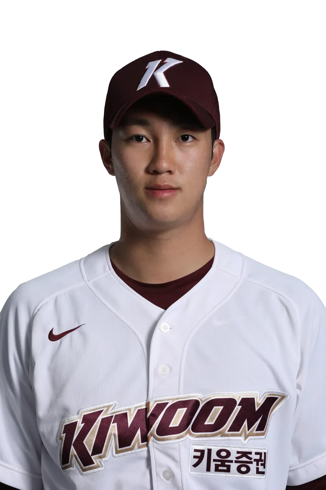
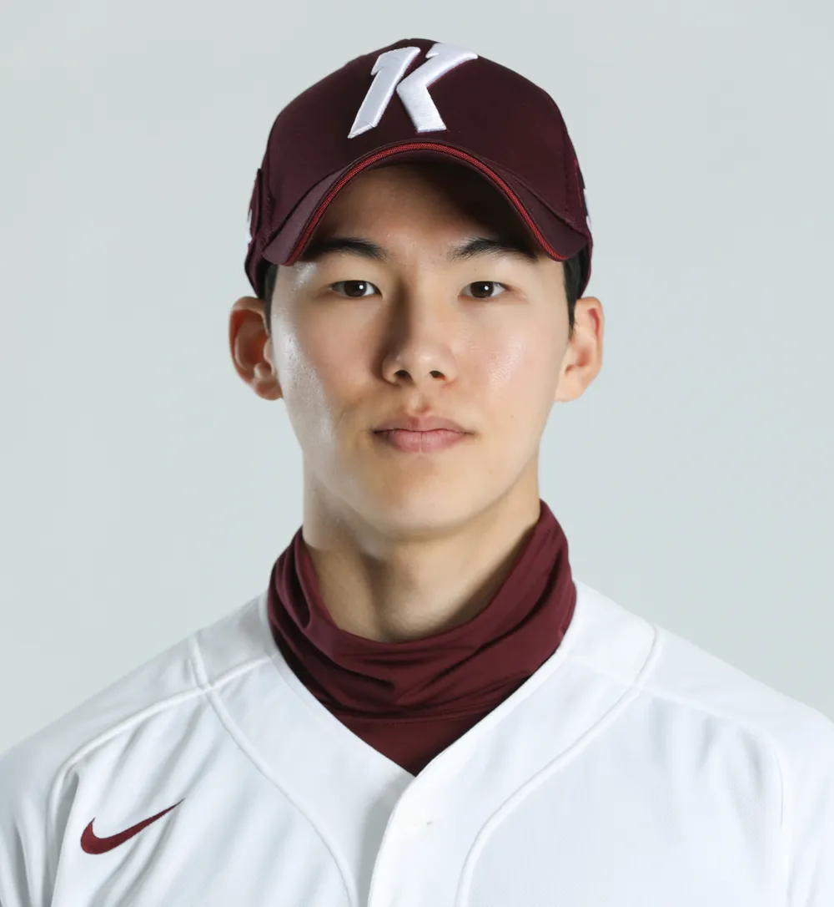
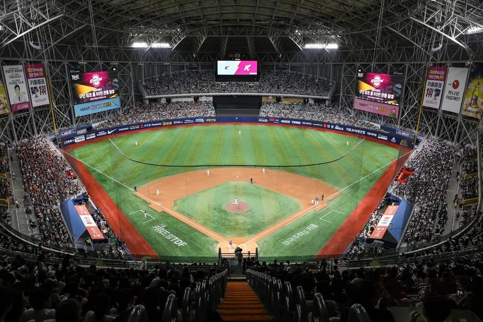

구단 소개
키움 히어로즈는 KBO 리그에서 활동하는 서울을 연고로 하는 야구팀입니다. 2013년에 창단되어 2019년에 첫 번째 준우승을 차지하였습니다.
키움 히어로즈는 뛰어난 성적을 거두며 팬들의 사랑을 받아왔으며, 특히 이정후와 같은 스타 선수를 배출했습니다. 구단의 주요 성과는 아래와 같습니다:
- KBO 리그 준우승: 3회
- 포스트시즌 진출: 7회 이상
- 신인왕 수상: 3회
역대 주요 선수들
- 이정후 (외야수)
- 안우진 (투수) 
- 김하성 (내야수) 
키움 히어로즈 경기장
키움 히어로즈의 홈 구장인 고척 스카이돔은 최첨단 시설을 자랑합니다.
한국 프로야구 최초의 돔구장으로 바람, 비, 계절 등의 외부 환경의 영향을 받지 않습니다. . 한국의 기후 특성상 장마철인 한여름에 매우 잦은 우천취소가 없다는 것이 가장 큰 특징입니다.
키움 히어로즈 성적
| 선수 | 포지션 | 타율 | 홈런 |
|---|---|---|---|
| 이정후 | 외야수 | 0.351 | 23 |
| MVP 수상자 | |||
| 안우진 | 투수 | 2.37 | - |
| 출처: KBO 리그 공식 기록 | |||